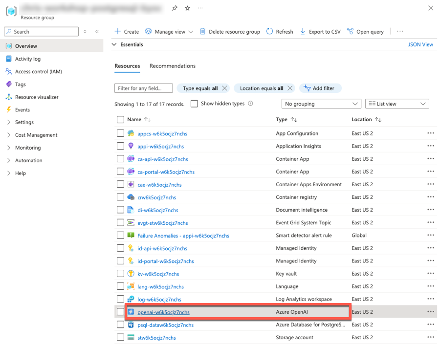
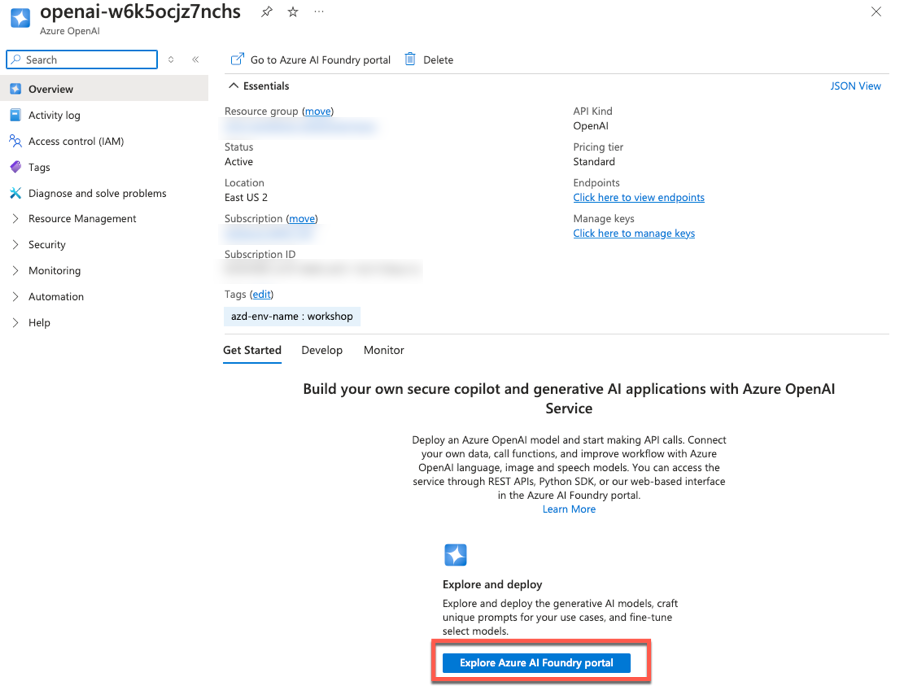
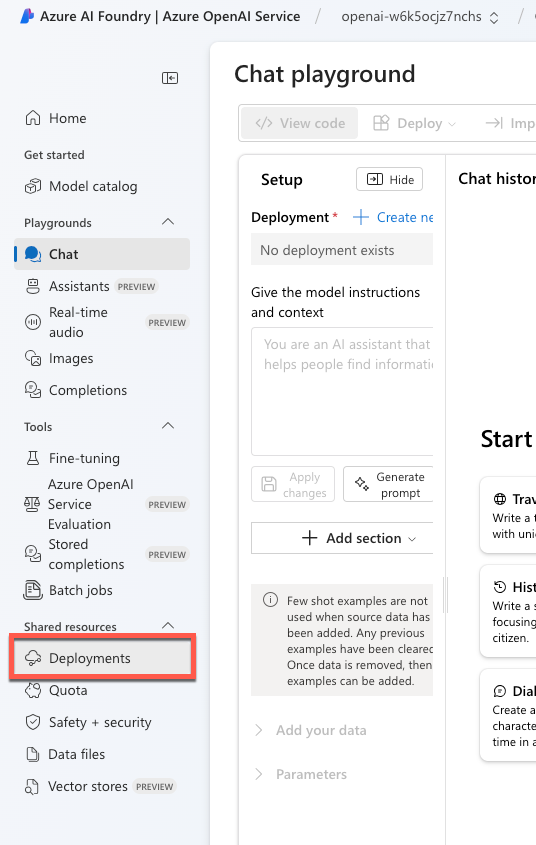
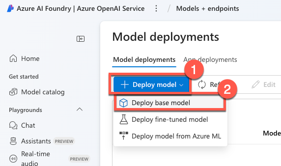
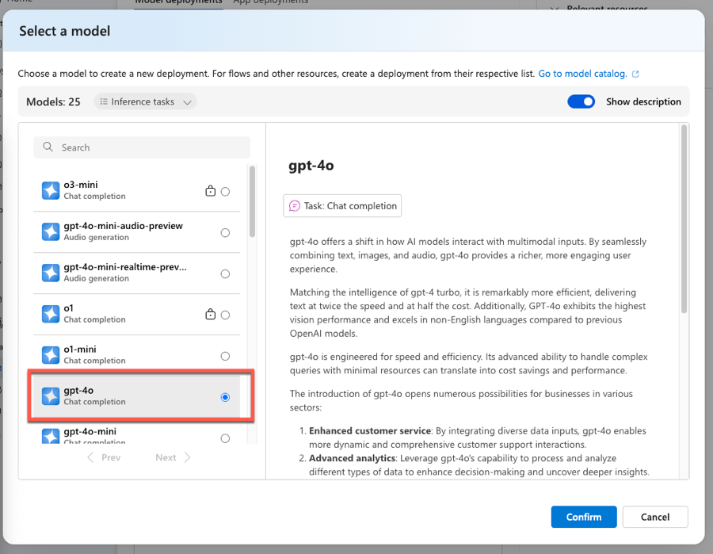
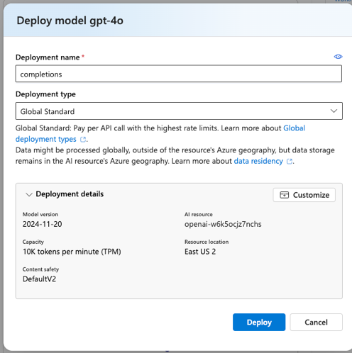
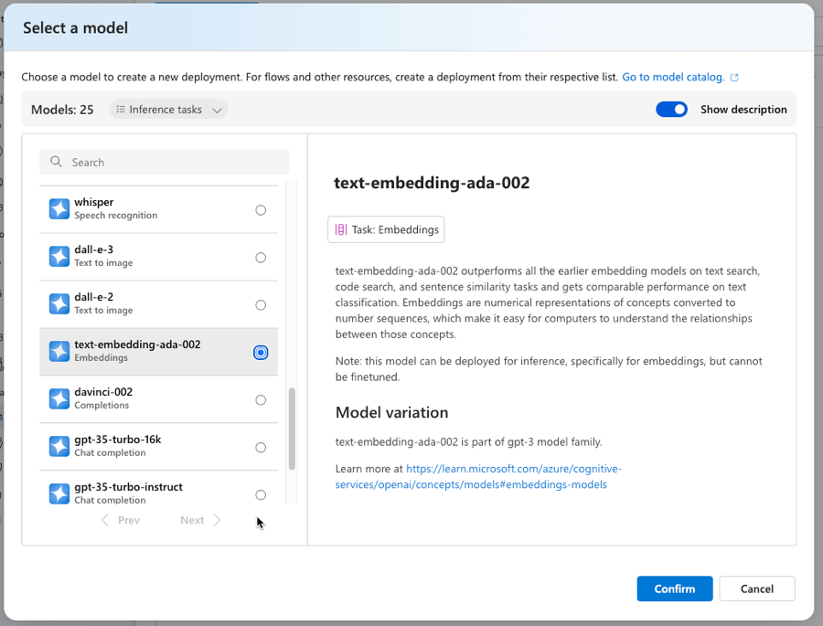
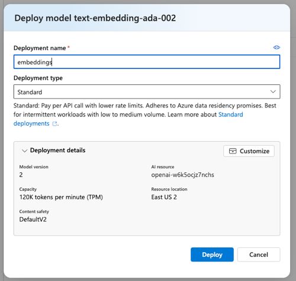

B. Instructor-Led Workshop Setup¶
Welcome to the Instructor-Guided Lab Track! You will need a valid Azure subscription, a GitHub account, and access to relevant Azure OpenAI models to complete this lab. Review the prerequisites section if you need more details.
WERE YOU LOOKING FOR THE SELF-GUIDED OPTION INSTEAD? You can find that here.
Authenticate With Azure¶
Before running the azd up command, you must authenticate your VS Code environment to Azure.
- To create Azure resources, you need to be authenticated from VS Code. Open a new integrated terminal in VS Code. Then, complete the following steps:
Step 1: Authenticate with az for post-provisioning tasks¶
-
Log into the Azure CLI
azusing the command below.1az login -
Complete the login process in the browser window that opens.
If you have more than one Azure subscription, you may need to run
az account set -s <subscription-id>to specify the correct subscription to use.
Step 2: Authenticate with azd for provisioning & managing resources¶
-
Log in to Azure Developer CLI. This is only required once per-install.
1azd auth login
Provision Azure Resource and Deploy App (UI and API)¶
You are now ready to provision your Azure resources and deploy the Woodgrove back solution.
-
Navigate to the
./workshopfolder within the cloned repo.1cd workshopThe
./workshopfolder contains the Instructor-Led version of the infrastructure and Azure Developer CLI templates. -
Use
azd upto provision your Azure infrastructure and deploy the web application to Azure.1azd upYou will be prompted for several inputs for the
azd upcommand:- Enter a new environment name: Enter a value, such as
dev. - The environment for the
azd upcommand ensures configuration files, environment variables, and resources are provisioned and deployed correctly. - Should you need to delete the
azdenvironment, locate and delete the.azurefolder at the root of the project in the VS Code Explorer. - Select an Azure Subscription to use: Select the Azure subscription you are using for this workshop using the up and down arrow keys.
- Select an Azure location to use: Select the Azure region into which resources should be deployed using the up and down arrow keys.
- Enter a value for the
deployAMLModel: SelectTrueif you were able to ensure you have sufficient Azure ML CPU quota available to deploy the model. Otherwise, chooseFalse. - If you select
False, you will need to skip the optional Semantic Ranker section of this accelerator. - Enter a value for the
postgresqlAdminPassword: Enter the password you want to use for the admin account on your Azure Database for PostgreSQL flexible server. - Ensure you copy the password in a secure location so you can use it later to access the database.
- Enter a value for the
resourceGroupName: Enterrg-postgresql-accelerator, or a similar name.
- Enter a new environment name: Enter a value, such as
-
Wait for the process to complete. It may take 30-45 minutes or more.
Not enough subscription CPU quota
If you did not check your Azure ML CPU quota prior to starting running the
azd upcommand, you may receive a CPU quota error message similar to the following:(OutOfQuota) Not enough subscription CPU quota. The amount of CPU quota requested is 32 and your maximum amount of quota is [N/A]. Please see troubleshooting guide, available here: https://aka.ms/oe-tsg#error-outofquota
You can still continue with the workshop, but will need to skip the optional Semantic Ranking section, as you will not have the deployed model available.
-
On successful completion you will see a
SUCCESS: ...message on the console.
When following the Instructor-Led version of this guide, it is required to run all azd up and azd deploy commands from within the ./workshop folder.
Deploy Azure OpenAI Models¶
Now that the infrastructure has been provisioned, you are now ready to deploy the completions and embeddings models to Azure OpenAI Service. These models will be used when implementing the AI integration into the application. On completing this step, you will have these models deployed:
- Completions: The
gpt-40model will be used for chat completions for the Copilot implementation. - Embeddings: The
text-embedding-ada-002model will be used to generate text embeddings that will be used to implement vector search for the Copilot implementation.
Follow these steps to deploy the Azure OpenAI models:
-
Open a new browser tab to navigate to the link below. You may be prompted to login.
1https://portal.azure.com/#browse/resourcegroups -
You may be presented with a "Welcome ot Microsoft Azure" screen. Select Cancel (to dismiss it) or click Get Started (to take an introductory tour of the Azure Portal).
-
You should be taken directly to the Resource Groups page for your subscription. In the list of resource groups, locate the one named
rg-postgresql-accelerator(or, if you assigned a different name, find that one). This resource group was created for you as part of theazd upresource deployment. It contains all of the Azure resources required to build and deploy your AI-enabled solution.You can use the search filter to reduce the number resource groups displayed.
-
Select your resource group.
-
Within the list of resources within the resource group, locate and select the Azure OpenAI resource.

-
In the Get Started section of the Azure OpenAI resources Overview page, select the Explore Azure AI Foundry portal button to open up the Azure AI Foundry. You might be prompted to login the the AI Foundry.

-
In the Azure AI Foundry, select the Deployments option in the left-side navigation.

-
On the Model deployments page, select the Deploy model button, then select the Deploy base model option.

-
On the Select a model dialog, select the gpt-4o model, then select Confirm.

-
On the Deploy model gpt-4o dialog, ensure that
completionsis entered in the Deployment name field, then select Deploy. This will deploy the OpenAI GPT-4o completions model to the Azure OpenAI service. The name of the deployment must becompletionsfor this workshop since the application code depends on this name.
-
Next, you'll deploy the Embeddings model. In the Azure AI Foundry, select the Deployments option in the left-side navigation.
-
On the Model deployments page, select the Deploy model button, then select the Deploy base model option.
-
On the Select a model dialog, select the text-embedding-ada-002 model, then select Confirm.

-
On the Deploy model gpt-4o dialog, ensure that
embeddingsis entered in the Deployment name field, then select Deploy. This will deploy the OpenAI GPT-4o completions model to the Azure OpenAI service. The name of the deployment must beembeddingsfor this workshop since the application code depends on this name.
-
You can successfully deployed the
gpt-4omodel that will be used for chat completions, and thetext-embedding-ada-002model that will be used to generate text embeddings.